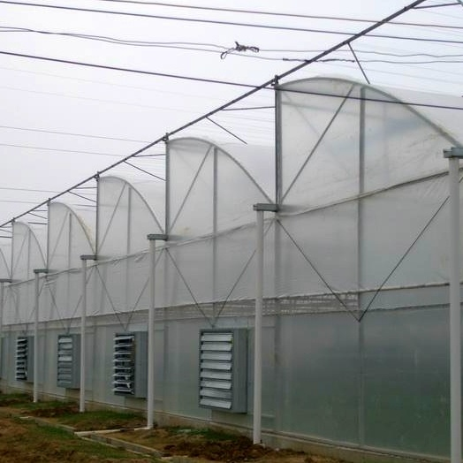
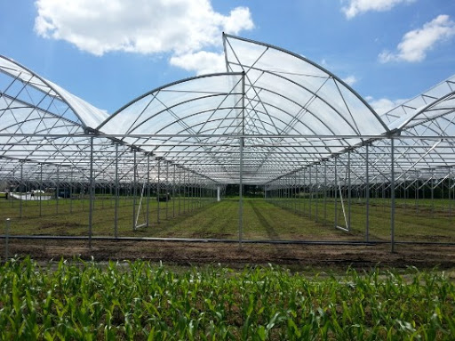

Sawtooth greenhouses are commercial greenhouses designed with roof ventilation as the single most important feature. The growth and health of your plants is directly reliant on good ventilation and the environment it promotes. Purchase as a kit or take advantage of our full installation service with our own trained staff and machinery. Available sizes – 6m, 8m, 10m & 12m wide.Full length opening and closing vertical roof vent.Fully engineered and robust galvanised steel frame made to order in our factory.Solarweave reinforced greenhouse film covers.Hinged or sliding doors.Aluminium Springlock clipping system firmly secures Solarweave sheets to greenhouse frames.Frameguard tape is provided to protect Solarweave from metal frame.A comprehensive installation manual is provided for all self-installation kits
Cost effective design.Total rain, wind and storm protection,The roof vent (combined with side wall vents) provides superior air transfer and hot air venting.All vents can be closed to slow down latent heat release during winter.